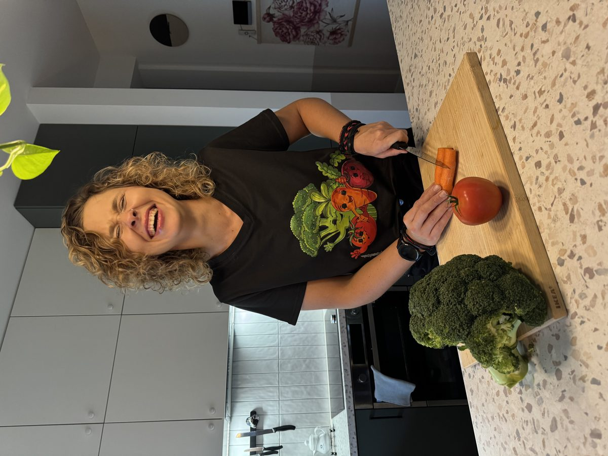

„Nie umiem gotować” to dobry początek
Nauka gotowania dla początkujących Lekcje 1:1 w Oświęcimiu i okolicach, u mnie albo u Ciebie w kuchni
Nie musisz nic umieć. Na lekcji gotujemy razem krok po kroku, w Twoim tempie i na zwykłych produktach ze sklepu. Po trzech godzinach masz gotowe dania do domu, menu dopasowane do siebie i pewność, że dasz radę sama albo sam.
Umów pierwszą lekcję
Dla kogo są lekcje gotowania od podstaw?
- dla osób, które mówią „umiem zrobić tylko jajecznicę” albo w ogóle nie gotują
- dla tych, którzy właśnie zamieszkali sami i mają dość jedzenia na mieście
- dla rodziców, którzy chcą gotować prosto i zdrowo dla całej rodziny
- dla osób, które zmieniają nawyki i nie wiedzą, od czego zacząć
- dla każdego, kto chce gotować taniej i przestać wyrzucać jedzenie
Nie oceniam i nie pędzę. Jeśli coś nie wyjdzie, poprawiamy to razem, bo właśnie po to jest lekcja.
Czego nauczysz się na lekcji?
- systemu zamiast przepisów: jak z kilku produktów złożyć różne posiłki, żeby nie szukać za każdym razem nowego przepisu
- planowania: jak ułożyć menu na tydzień, które pasuje do Twojego czasu i budżetu
- mądrych zakupów: co kupować, ile i gdzie, żeby wydawać mniej i nie marnować jedzenia
- gotowania w praktyce: przygotowujemy razem kilka dań krok po kroku, na prawdziwych produktach
- prostych patentów: co zrobić z resztek, jak gotować na kilka dni i co mieć w szafce na awaryjny obiad
Na koniec zabierasz gotowe dania do domu i spisany plan działania na najbliższy tydzień.
Dlaczego lekcja 1:1, a nie kurs grupowy?
Na kursie w grupie wszyscy gotują ten sam przepis w tym samym tempie. Na lekcji 1:1 wszystko kręci się wokół Ciebie: Twoich smaków, diety, budżetu i tego, ile czasu realnie masz w tygodniu. Możesz pytać o wszystko i nikt nie patrzy Ci na ręce. Jeśli spotkamy się u Ciebie, uczysz się na własnych garnkach i we własnej kuchni, więc od razu wiesz, jak to powtórzyć.
Jak wygląda lekcja?
- Piszesz albo dzwonisz. Opowiadasz, co lubisz jeść, czego unikasz i ile chcesz wydawać.
- Ustalamy menu i termin. Zakupy mogę zrobić sama, zakupy spożywcze rozliczamy osobno.
- Gotujemy razem około 3 godzin, w mojej kuchni w Oświęcimiu albo u Ciebie.
- Zabierasz dania i plan na tydzień. Gotujesz dalej sama albo sam, a z pytaniami zawsze możesz wrócić.
Gdzie prowadzę lekcje gotowania?
W mojej kuchni w Oświęcimiu albo u Ciebie w domu. Dojeżdżam m.in. do Brzeszcz, Kęt, Chełmka, Libiąża, Zatoru, Bierunia, Chrzanowa, Jaworzna, Andrychowa, Wadowic, Pszczyny, Tychów, Bielska-Białej i Katowic. Mieszkasz na Śląsku? Zobacz warsztaty kulinarne na Śląsku. Gdzie indziej w Małopolsce lub na Śląsku? Napisz, a sprawdzę, czy dam radę dojechać.
Chcesz podarować komuś taką lekcję? Zobacz voucher na warsztat kulinarny.
Pytania o naukę gotowania
Czy muszę cokolwiek umieć, żeby przyjść na lekcję?
Nie. Zaczynamy od tego, co już umiesz, nawet jeśli to tylko herbata. Tempo i poziom dopasowuję do Ciebie.
Ile trwa lekcja gotowania?
Około 3 godzin. W tym czasie przygotowujemy kilka dań, które zabierasz do domu, i układamy plan na najbliższy tydzień.
Co, jeśli mam alergie albo jestem na diecie?
Menu układamy pod Ciebie. Przed lekcją poproszę Cię o informacje o alergiach, nietolerancjach i diecie, żeby wszystko było bezpieczne i smaczne.
Ile kosztuje lekcja gotowania 1:1?
Cenę ustalamy indywidualnie, zależy od miejsca i programu. Zakupy spożywcze rozliczamy osobno. Voucher na warsztat 1:1 w prezencie kosztuje 500 zł.
Umów pierwszą lekcję
Napisz kilka słów o sobie: co lubisz jeść, czego się boisz w kuchni i gdzie mieszkasz. Odezwę się, żeby ustalić menu i termin.
Wolisz porozmawiać? Zadzwoń: +48 503 802 961